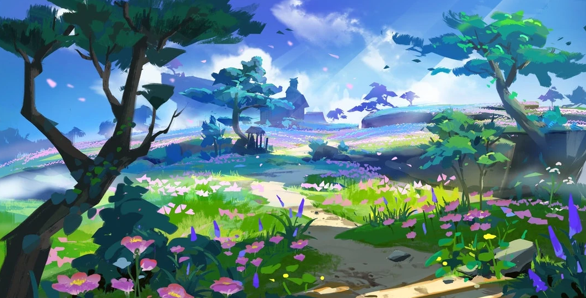
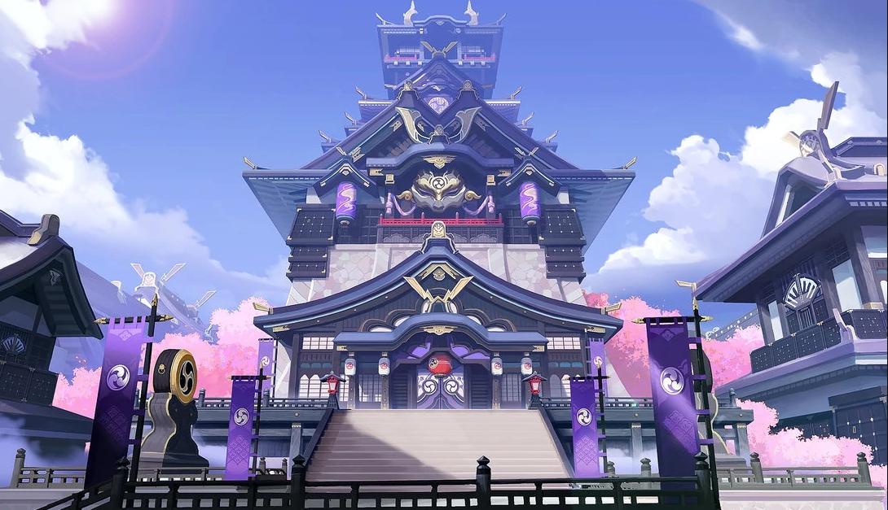

Inazuma
Un archipiélago situado en el extremo oriente de Teyvat. Encara tormentas perpetuas, adéntrate en la isla de las flores de cerezo, en sus playas, los imponentes acantilados y las solitarias montañas, y presencia la eternidad perseguida por Su Excelencia, la todapoderosa Narukami.



Curiosidades
- El Decreto Sakoku de Inazuma y la Captura de Visiones, hace un paralelismo a la Política Sakoku, de la vida real, aplicada durante el Shogunato Tokugawa Japonés, durante el periodo Edo
- El Shogunato de Inazuma, la Entidad Controladora de la nación, es una referencia directa del mismo gobierno usado bajo el Shogunato Japonés.
- Algunos nombres utilizados en la Isla Tsurumi se basa en el idioma Ainu, hablado por la etnia Ainu, personas indígenas del norte de Japón (la Isla de Hokkaido) y en la parte más al sureste de Rusia (Isla de Sajalín, Islas Kuriles, y el extremo de la península de Kamchatka)
- La palabra japonesa moderna Inazuma (en japonés: 稲妻 [Inazuma]) proviene de una antigua palabra japonesa escrita con el mismo kanji (en antiguo japonés: 稲妻 [Inanduma]), que significa literalmente "La pareja del Arroz" (Hoy en día Tsuma (> zuma) significa "Esposa," pero tenía un genero más neutro en tiempos pasados). En el antiguo Japón, habían un montón de truenos durante el tiempo de cultivo del arroz, así que habia una creencia de que un trueno podría producir arroz, apodando así al trueno como "La pareja del Arroz".
- La Isla Narukami (en japonés: 鳴神島 [Narukami-jima], "Isla Narukami") es una isla en la cual se encuentra principalmente el Shogunato de Inazuma, desde aquí suelen entrar la mayoría de las personas provenientes del extranjero, por ende, se suele vigilar el cumplimiento de las Políticas y Leyes en relación con el decreto Sakoku. Los festivales públicos y eventos culturales de Inazuma se llevan acabo en esta región.